I haven’t been out for a long time since I started online class. Many times my food is basically called delivery, and now my clothes are basically pajamas.
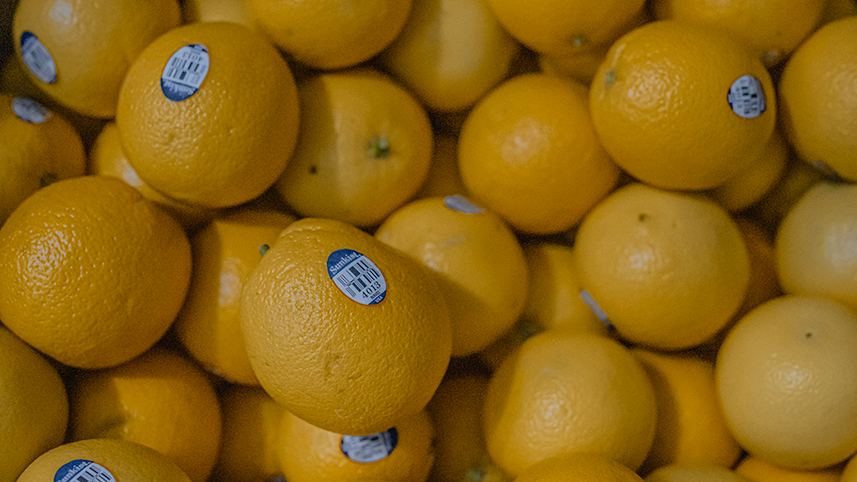Oranges are my favorite fruit, so this time I bought a box and put it at home.
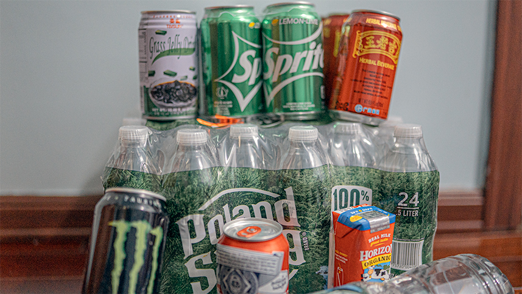 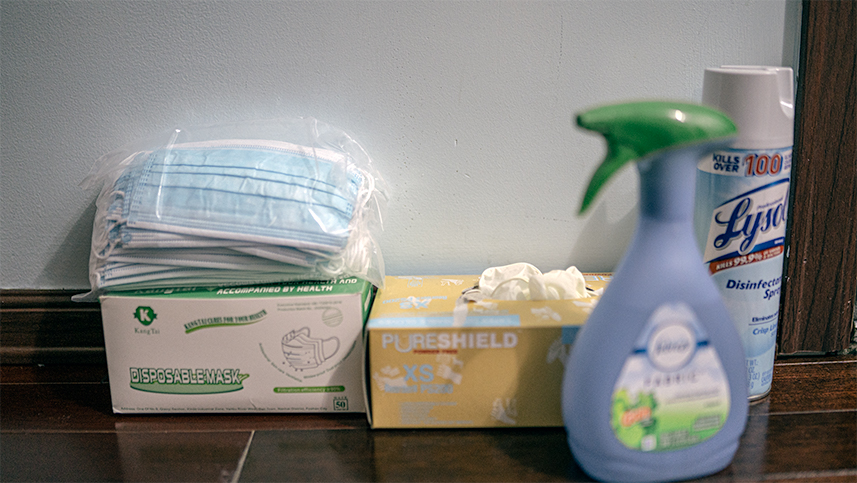I also stocked up some drinks, food and protective equipment.
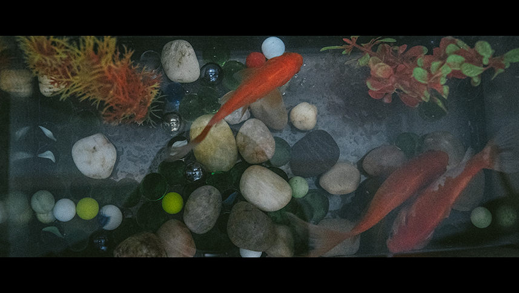This is the only pet in my home.
During my time at home, the most played game is Fortnite. I really enjoy playing games with friends, and then Youtube is the video website I watch most often.
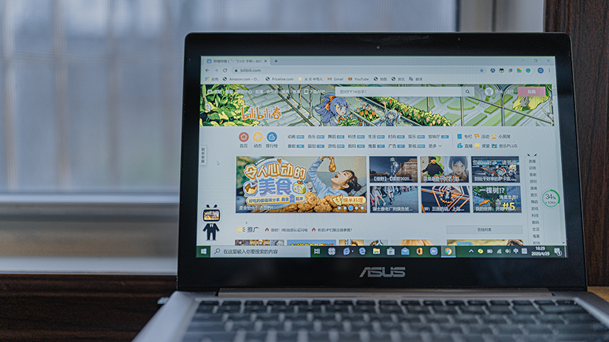This is my computer, I will use it for the online class and then learn something interesting in Bilibili.
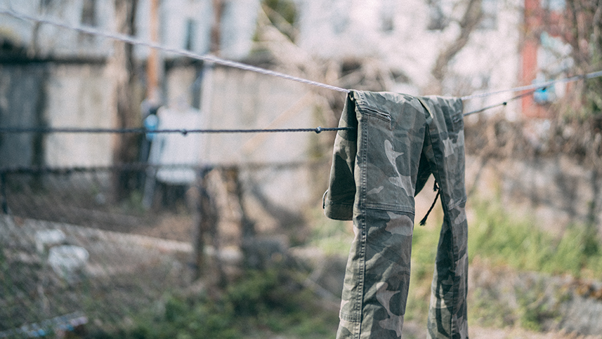The laundromat around me are closed, so I have recently hung some clothes in the backyard to dry by the sun.
 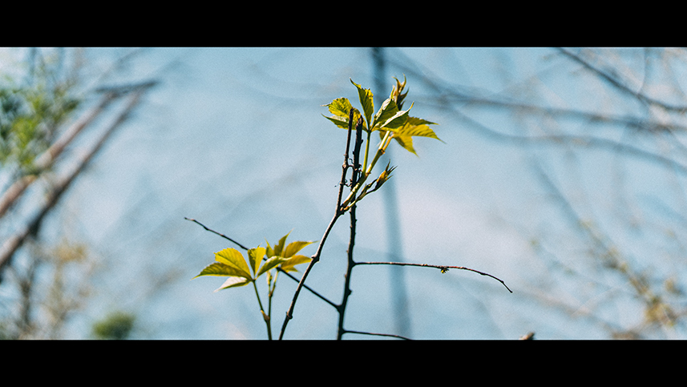
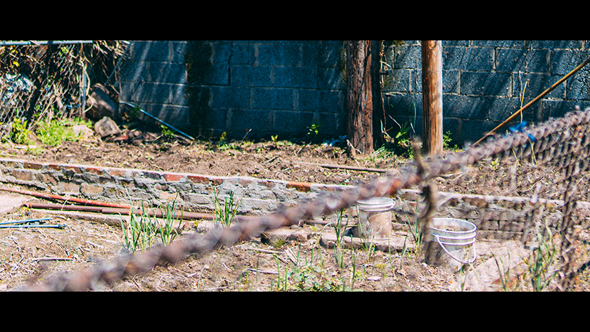
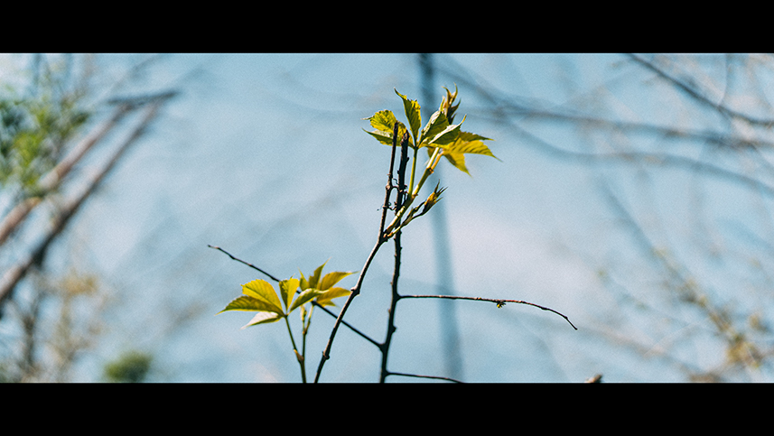
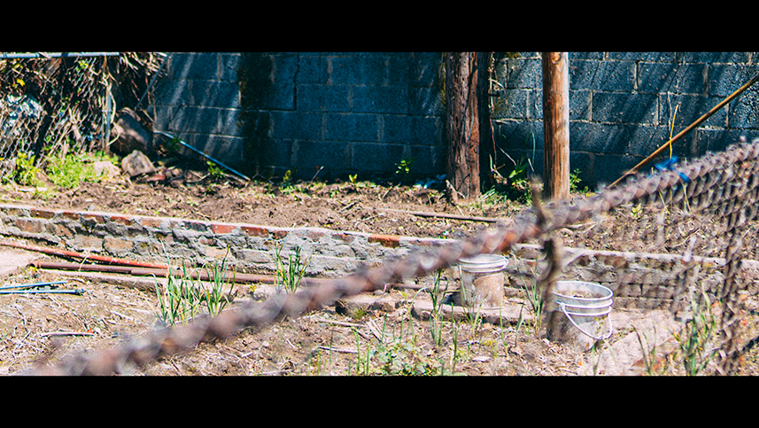
In my leisure time, I usually go to the backyard to see the sky to breathe the air, and also communicate with my neighbors. My neighbors like to grow vegetables. Sometimes they also share some vegetables with me.
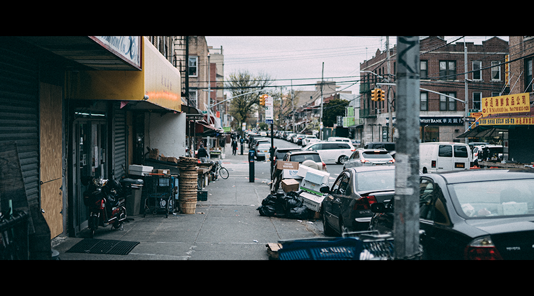 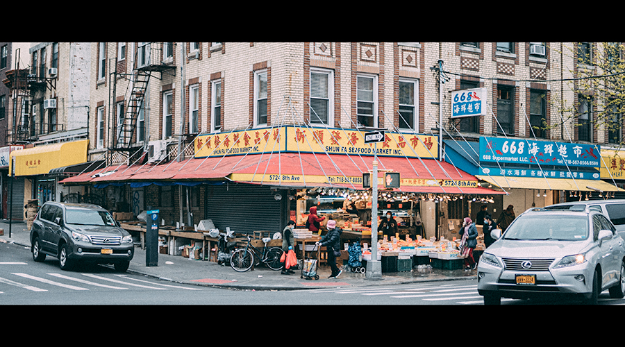I live in a Chinese community. Many shops here are basically closed. Only some essential shops are open. The number of pedestrians on the street is much less than before. And everyone comes out with a mask on.
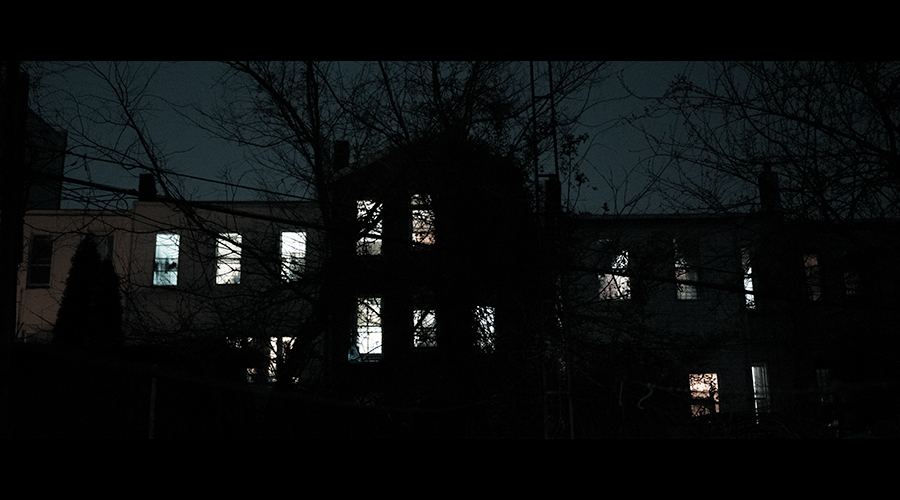 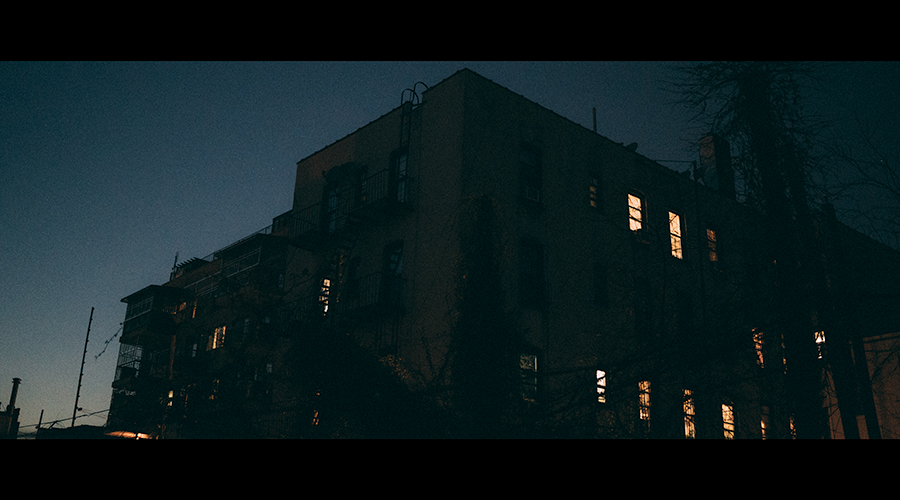At eight o'clock in the evening, everyone's lights are on. This is the first time I have seen the houses around me turn on the lights so early.
This is the least number of pedestrian in New York in more than a decade. The epidemic not only isolates people but also builds a gully between the hearts of some people. Some people accuse each other or discriminate against language, some people be glad when other people are in difficulties, some people began to question the trends of trust, attitudes, and globalization, but we also saw many things are moving in a good direction, there is much police on the streets to maintain safety and order, and delivery is still smooth With the supply of daily necessities, many essential stores are still open. The subway and public transportation are running as usual. The medical staff is still struggling on the front line. A large number of retired medical volunteers are returning to the front line. New York is still connected to the world no matter what. One of the most important centers, I hope this city will be full of vitality again in the near future and continue to connect the world here.
Back to main page